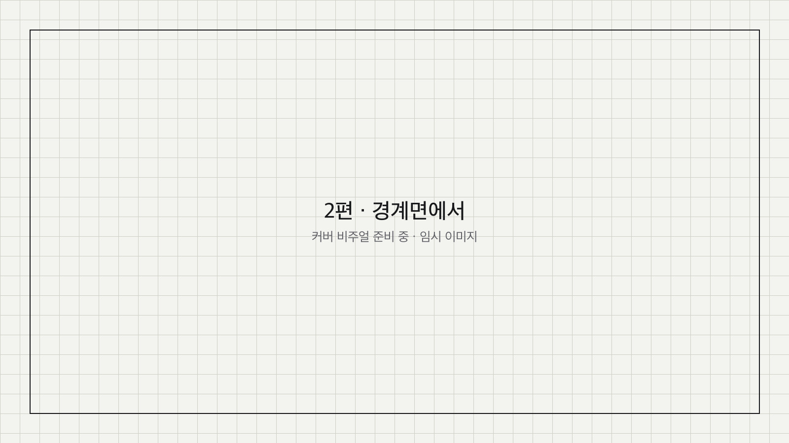
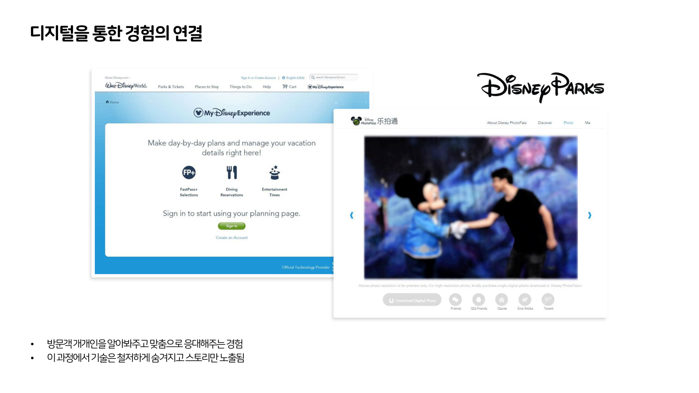
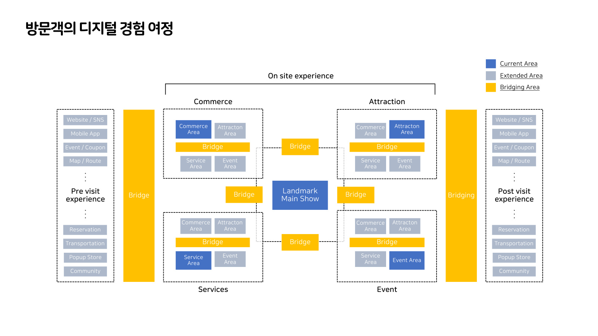
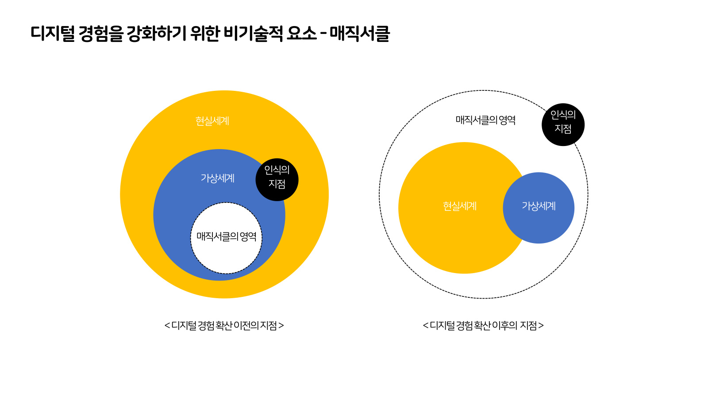

경계면에서코-크리에이션 문화PART 2

2023년 11월, 나는 파리 루브르의 유리 피라미드 사진으로 발표를 열었다. 유리 피라미드 위에 커다란 흑백 이미지가 덮여 있고, 어느 각도에서는 그 이미지가 건물과 정확히 맞아떨어지고 어느 각도에서는 어긋나 있다. 나는 그 사진 위에 라벨을 여섯 개 붙였다. 3년이 지나 다시 보니 내가 그때 붙들고 있던 것은 기술이 아니라 경계면 그 자체였다. 이 글은 그 경계면을 양쪽에서 밀어 본 기록이다.
시리즈 안내 : 이 글은 "코-크리에이션 문화" 2편이다. (1) 창의성은 누구의 것인가 (2) 경계면에서 (3) 기록이 이야기가 될 때 이 시리즈는 2023년 두 차례의 발표를 3년 뒤에 1인칭으로 다시 정리한 것이다.
01피라미드 위에 덮인 것
작업의 이름은 'JR au Louvre & Le Secret de la Grande Pyramide'다. 파리 루브르의 유리 피라미드 위에 JR이 거대한 이미지를 덮은 작업이다.
사진을 크게 띄워 놓고 보면 피라미드 가운데 부분의 결이 주변과 다르다. 유리와 금속의 결이 아니라 종이의 결이다. 무대에서는 그 부분을 가리키면서 어떤 시간성이 느껴진다고 말했다. 종이 위에 인쇄된 것은 피라미드 뒤에 서 있는 궁의 파사드다. 뒤에 있는 것을 앞으로 끌어와 앞에 있는 것 위에 덮은 셈이고, 그래서 한 프레임 안에 두 시간이 같이 들어와 있다. 도시의 상징적인 조형물과 그 주변의 풍경을 겹쳐 과거의 시간과 현재의 시간을 한 화면으로 바꿔 놓은 작업이라고 나는 소개했다.
이런 작업은 관람자가 완성한다. 어느 자리에 서느냐에 따라 종이 위의 궁과 뒤에 선 실제 건물이 맞아떨어지기도 하고 어긋나기도 한다. 사람들은 몰입감 있는 경험을 얻으려고 그 자리를 찾아다닌다. 같은 작업이 어떤 각도에서는 착시가 되고 어떤 각도에서는 그냥 종이를 덮어 놓은 유리 건물이 된다.
나는 이 사진을 예쁜 레퍼런스로 쓰지 않았다. 같은 사진 위에 라벨을 여섯 개 붙였다.
가상의 이미지가 시작되는 지점. 가상의 이미지가 벗겨져 현실의 표면이 드러난 지점. 가상의 이미지가 심하게 왜곡되어 보이는 지점. 현실의 조형물과 여러 각도에서 만나는 지점. 조형물의 내부에서 밖으로 나오면서 바라보는 시점. 그리고 마지막 하나, 투명한 가상의 경계면에 서 있는 사람들의 감정.

앞의 다섯은 좌표에 관한 것이다. 어디서 시작하고, 어디서 벗겨지고, 어디서 일그러지고, 어디서 겹치고, 어디서 보는가. 마지막 하나만 좌표가 아니다. 감정에는 위치를 찍을 수 없는데도 나는 그 라벨을 지우지 않고 남겨 두었다.
무대에서는 이 작업의 한계를 이어서 말했다. 물리 세계 위에 구현된 스토리텔링에는 한계가 있다. 시간이 지나면 낡고 뜯기고 망가진다. 날씨가 나쁘면 그 영향을 크게 받는다. 그리고 어느 위치에서 바라보느냐에 따라 완성된 것으로 보이기도 하고 그렇지 않기도 한다.
세 가지를 다시 세우면 마모, 환경, 시점이다. 나는 이걸 작품의 흠으로 적어 두지 않았다. 현실 위에 무언가를 덮는 순간 따라오는 조건이라고 봤다. 종이는 젖고 접착은 떨어지고 관람자는 자기가 서고 싶은 자리에 선다. 그러니 이 조건을 없애는 쪽이 아니라 이 조건을 안고 설계하는 쪽으로 가야 한다고 생각했다.
내가 경계면이라는 말을 쓰는 것은 그 조건들을 한 덩어리로 부르기 위해서다. 현실과 가상이 만나는 자리는 선이라기보다 면에 가깝고, 그 면에는 두께가 있다. 마모와 왜곡과 시점은 그 두께 안에서 일어난다. 그 면을 어떻게 설계할 것인가가 그날 발표의 출발점이었다.
02도시가 하나의 거대한 테마파크라면
나는 테마파크를 만들어 왔다. 여러 프로젝트에 참여했고, 그 일을 하면서 생긴 감각이 하나 있다. 테마파크에 간다는 경험과 어떤 도시에 기대를 품고 찾아간다는 경험이 생각보다 비슷하다는 것이다.
둘 다 물리적인 공간과 장소를 갖는다. 둘 다 안과 밖을 가르는 경계를 갖는다. 그 안에는 수많은 콘텐츠와 체험 요소, 서비스와 편의, 보상이 배치되어 있다. 방문객은 지도를 받고 동선을 고르고 줄을 서고 무언가를 먹고 기념품을 산다. 그리고 그것을 최종적으로 전달하는 것은 사람이다. 무대에서 나는 사람이 주는 느낌이 굉장히 중요하게 작동한다고 말했다. 안내하는 사람, 마주치는 사람, 같이 줄을 선 사람이 그 공간의 인상 위에 얹힌다.

런던에서 워너브라더스 스튜디오를 봤다. 해리포터 세계관을 그대로 옮겨 놓은 곳이다. 세트와 소품이 실물로 남아 있고, 관람 동선 중간중간에 관람객이 직접 참여하는 코너가 끼어 있다.
빗자루를 타는 코너가 그중 하나였다. 거기 앉아 정해진 동작을 하면 영화 속의 환상적인 장면 안에 내가 들어가 있는 화면을 받게 된다. 나는 그 자리에서 그 장면을 직접 체험해 본 셈이다. 다른 코너에서는 스크린 안에서 마법을 부리는 마법사를 보면서 훈련을 받는다. 몇 번 따라 하면 조금 더 자란 마법사가 되어 다음 칸으로 넘어간다. 무대에서 이 두 코너를 나란히 든 이유는 세트를 보러 간 사람이 어느 순간 세트 안에서 무언가를 하고 있게 되기 때문이다. 보는 자리와 하는 자리가 같은 동선 위에 번갈아 놓여 있다.
디즈니 쪽 사례는 결이 조금 다르다. 도쿄 디즈니랜드로 가는 길에는 우리가 일상적으로 타는 지하철 같은 교통수단 자체가 이미 세계관 안에 들어와 있다. 파크에 도착하기 전부터 이동 수단이 세계관의 일부다. 티켓을 끊는 자리보다 훨씬 앞에서 경계가 시작되는 것이다.
파리 디즈니랜드에는 파크 옆에 스튜디오 파크가 따로 있어서, 그 세계가 어떻게 만들어졌는지 제작 배경과 뒷이야기를 보여준다. 한쪽에서는 세계를 믿게 만들고 다른 쪽에서는 그 세계를 만든 손을 보여준다. 두 파크는 담장 하나를 사이에 두고 붙어 있다. 뒤에 나올 매직서클 이야기와 이어지는 배치라고 생각한다.
그래서 그날 이렇게 물었다. 도시가 하나의 거대한 테마파크라면?
테마파크는 경계가 뚜렷한 세계다. 문이 있고 티켓이 있고, 안으로 들어가면 세계관이 시작된다. 어디까지가 안이고 어디부터가 밖인지가 분명하다. 그 분명함이 테마파크의 힘이다. 문을 통과하는 순간 방문객은 밖의 규칙을 잠시 내려놓기로 동의한 것이 되고, 그 동의 위에서 연출이 작동한다. 도시에는 그런 문이 없다. 질문은 그 차이에서 나온다. 경계가 없는 곳에서 세계관을 어떻게 시작할 것인가.
03기억의 방향을 뒤집는 문장
여러 도시와 여러 파크를 돌아다니면서 나는 많은 것을 경험했다. 그 도시가 준 느낌, 거기서 받은 인상, 그것을 기억하고 나중에 누군가에게 이야기해 주는 일. 발표에서도 그 이야기를 먼저 했다. 여기 계신 분들도 아마 비슷한 기억을 갖고 계실 것이라는 식으로 청중 쪽으로 한 번 넘겼다.
그다음에 문장을 하나 뒤집었다.
내가 그 도시를 다시 찾아갔을 때, 그들은 나를 얼마나 기억해 주는가. 나를 얼마나 알아봐 주는가.

두 가지를 위아래로 놓고 비교했다. 우리가 방문한 도시를 경험하고 기억하는 것. 그리고 도시가 우리에 대해 기억하고 응대해주는 것.
실제로는 첫 번째만 일어난다. 내가 겪은 모든 경험은 내 머릿속에 흩어진 채로 남고, 시간이 지나면 그마저 옅어진다. 사진 몇 장과 이야기 몇 개가 남을 뿐이다. 그 도시가 나를 기억하고 내 이름을 불러주는 경험은 가져 본 적이 없다. 기억이 한쪽으로만 흐른다.
이 뒤집기가 발표 전체의 축이었다. 축이 되는 이유는 이것이 감상이 아니라 설계 질문이기 때문이다. 방문객이 기억하게 만드는 일은 연출을 잘하면 된다. 공간이 방문객을 기억하게 만들려면 지금 없는 층을 하나 더 얹어야 한다.
경계면을 설계한다는 말은 결국 기억을 어느 방향으로 흐르게 할 것인가를 정하는 일이라고, 나는 그때 그렇게 생각했다.
04기술은 숨고 이야기만 남는다
방향을 뒤집었으면 그다음은 실제로 그렇게 하고 있는 곳을 찾아야 한다. 나는 디즈니의 세 가지를 붙였다.
첫째는 My Disney Experience다. 모바일 앱과 웨어러블로 집, 테마파크, 호텔, 크루즈 같은 공간을 하나로 연결한다. 그 위에서 일정, 예약, 대기, 주문, 사진 수령이 데이터를 기반으로 통합된다. 무대에서는 스마트폰 앱이나 손목에 차는 웨어러블로 태깅하면 어트랙션과 서비스, 티켓과 상품, 자료와 사진이 준비된 상태로 이어진다고 설명했다. 방문객 입장에서는 여러 곳에 흩어져 있던 절차가 한 줄로 이어지는 셈이다. 특히 사진 수령이 여기 붙어 있는 것이 중요하다. 파크 곳곳에서 찍힌 사진이 집으로 돌아간 뒤에도 계정 안에 남는다. 방문 후의 시간이 방문 중의 시간과 끊기지 않는다.
둘째는 Disney Virtual Queues다. 모바일 앱으로 가상 대기열에 참여하는 기능이다. 임시 휴장 기간 동안 디지털 기반의 인프라를 강화해 파크 운영 효율을 높였고, 재개장 후에 어트랙션 이용과 식음료 주문, 객실 이용 지표가 대폭 상승했다.
줄을 없앤 기능이 아니라는 점은 짚어 둘 필요가 있다. 줄은 그대로 있고 서 있는 몸만 줄에서 빠져나온다. 그 몸이 그동안 다른 곳에서 무언가를 사고 먹는다. 어트랙션과 식음료와 객실이 함께 올라간 것도 그 때문이 아닐까 싶다. 대기라는 죽은 시간을 다른 영역으로 옮긴 셈이고, 이건 뒤에 나올 다이어그램의 이야기와 같은 구조다.
셋째는 Play Disney Parks다. 물리적 공간 위에 디지털 액세스 포인트를 심어 두고, 그 지점에서 캐릭터를 통해 미션을 수행하고 보상을 얻게 한다. 무대에서는 몰입감 있게 만들어진 하나의 공간 안에 그런 접점이 여러 개 놓여 있고, 스마트폰으로 태깅하면 그 자리에서 캐릭터를 만나거나 미션을 받게 된다고 설명했다. 걷는 일이 조작이 되는 셈이다. 앞의 두 사례가 흩어진 절차를 한 줄로 모은 쪽이라면, 이쪽은 공간 자체를 인터페이스로 쓴다.
무대에서는 이 세 가지를 설명한 뒤에 장면 하나를 들었다. 파크 안에서 미키마우스가 나에게 다가와 오늘 생일 아니냐고 묻고 축하 인사를 건네는 상황이다. 저 캐릭터가 그걸 어떻게 알았을까. 뒤에서는 당연히 디지털 레이어가 작동하고 있다. 앱에 등록된 정보가 있고, 그것을 현장의 캐릭터에게 전달하는 경로가 있다.

그런데 그 기술은 방문객 쪽으로 한 번도 나오지 않는다. 알림도 없고, 확인 화면도 없고, 잘 작동했다는 표시도 없다. 그날 이 원칙을 이렇게 정리했다. 방문객 개개인을 알아봐주고 맞춤으로 응대해주는 경험, 이 과정에서 기술은 철저하게 숨겨지고 스토리만 노출됨.
여기에 한 가지를 덧붙여 두었다. 이 과정에서 테크와 데이터만 작동하는 것이 아니라 감동적인 스토리와 매력적인 콘텐츠가 더해진다는 점이다. 데이터가 아무리 정확해도 다가오는 것이 캐릭터가 아니면 그 순간은 만들어지지 않는다.
3년이 지나 다시 읽었을 때 가장 덜 낡은 것이 이 원칙이었다. 뒤에 나오는 표준도, 지갑도, 체인 이름도 그때와 사정이 많이 달라졌다. 기술을 숨긴다는 원칙만 그대로 남아 있다. 지금 여러 서비스가 자기가 무엇을 알고 있는지를 굳이 화면에 띄우는 것을 보면, 이 원칙이 오히려 더 지키기 어려워진 것 같다. 개인화가 작동했다는 사실을 화면에 표시해 두면 만든 쪽은 성과를 증명할 수 있지만, 받는 쪽에서는 그 순간이 응대가 아니라 처리로 읽힌다.
05비어 있는 자리에 다리를 놓는다
여기서 발표는 도식으로 넘어간다. 그날 정보량이 가장 많았던 구간이고, 같은 그림 위에 레이어를 한 겹씩 얹어 가며 설명했다.
출발은 단순하다. 어떤 도시를 방문할 때 첫 번째 보기가 되는 곳은 랜드마크다. 랜드마크와 메인 쇼를 가운데 두고, 그 주변에 어트랙션, 커머스, 이벤트, 서비스라는 네 영역이 배치된다. 가운데 칸에 두 이름이 같이 들어간 것은 그것이 가장 중요해서가 아니라 대부분의 방문이 거기서 시작되기 때문이다. 여기에 시간 축을 하나 더 그었다. 방문 전(Pre visit), 현장(On site), 방문 후(Post visit) 세 구간이다.
각 칸에는 실제 접점들이 붙는다. 이벤트, 쿠폰, 지도, 경로, 웹사이트, SNS, 모바일 앱, 예약, 커뮤니티, 팝업 스토어, 교통. 이 목록은 방문 전 구간과 방문 후 구간에 똑같이 한 벌씩 붙어 있다. 같은 접점이 시간대만 바꿔 두 번 나타나는 셈이고, 도식에서 이 반복이 눈에 먼저 들어온다. 하나하나는 다 잘 만들어져 있다. 문제는 서로 붙어 있지 않다는 것이다.
무대에서 한 말은 이랬다. 커머스라는 영역에 커머스만 있는 것이 아니다. 커머스 옆에 어트랙션이 있고 서비스가 있고 이벤트가 있다. 그런데 이것들은 흩어져 있고 분절되어 있다. 그 사이를 조금씩 건너다닐 수 있게 하는 무언가가 필요하다는 이야기였다. 시간 축을 하나 더 그은 것도 같은 이유다. 방문객이 그 장소에 머무르는 시간만이 아니라 그 이전의 경험과 그 이후의 경험까지 같이 놓고 봐야 한다고 나는 말했다.

그래서 도식은 세 단계로 확장된다. 지금 작동하고 있는 영역(Current Area), 그 바깥으로 넓어지는 영역(Extended Area), 그리고 영역과 영역 사이에 끼어드는 다리(Bridging Area). 마지막에는 영역 사이사이에 'Bridge'라고 이름 붙인 작은 조각들이 촘촘하게 들어간다. 그림이 복잡해 보이는 이유는 새 시설을 그려 넣어서가 아니라 사이를 전부 채웠기 때문이다. 브릿지 자체는 방문객이 찾아가는 목적지가 아니다. 이미 있는 목적지들 사이를 건너다닐 수 있게 하는 것이 그 역할의 전부다.
여기에 축이 하나 더 생긴다. 디지털과 피지컬이다. 경험은 기본적으로 피지컬 레이어 위에서 일어나고, 기술이 발전하면서 디지털 레이어가 그 위를 덮는다. 두 레이어를 우리는 동시에 겪는다. 그런데 피지컬 레이어만으로는 방문 전과 방문 후가 현장과 이어지지 않는다. 몸은 한 번에 한 군데에만 있을 수 있기 때문이다.
디지털 레이어를 적극적으로 쓰면 이전 단계와 이후 단계를 현장에 붙일 수 있고, 그것이 다시 재방문으로 돌아오는 순환을 만든다. 도식은 그 순환을 'To Revisit Cycle'과 'From Revisit Cycle'로 표시하고, 그 과정을 거친 방문객을 Player에서 True Player로 옮겨 적었다. 방문 한 번으로 끝나는 사람과 순환 안으로 들어온 사람을 다른 이름으로 부른 것이다.
여기서 니즈를 두 층으로 나눈 것도 그대로 남겨 두고 싶다. 하나는 언맷 니즈(unmet needs, 겪고 있지만 해결되지 않은 필요)다. 고객이 실제로 불편을 느끼고 있으니 해결하면 효과가 바로 보이고, 그래서 대부분의 개선은 이 층에서 일어난다. 다른 하나는 히든 니즈(hidden needs, 스스로도 아직 필요하다고 깨닫지 못한 필요)다. 물어봐도 답이 나오지 않는 층이다. 디지털 레이어가 가장 잘할 수 있는 일이 두 번째 쪽이라고 나는 생각했다.
도식의 끝에는 라벨이 하나 더 붙어 있다. 확장된 디지털 경험 쪽에 'Web3 Experience with Blockchain'이라고 적어 두었다. 그림 전체에서 특정 기술의 이름이 나오는 곳은 거기 한 군데뿐이다. 브릿징이라는 문제를 먼저 세우고, 답은 맨 끝에 작게 붙인 셈이다. 그 답이 무엇을 하려던 것인지는 이 글의 범위가 아니고 3편에서 다룬다.
각각은 너무나 잘 만들어져 있는데 사이가 비어 있다. 그리고 그 사이에서 경험은 점점 휘발되어 사라진다. 그 자리를 무엇으로 이을 것인가. 발표의 전반부는 이 질문에서 멈춘다.
06같은 장소 위에 몇 겹까지 덮을 수 있는가
경계면을 다루는 요소를 나는 두 갈래로 나눴다. 비기술적 요소가 먼저였고 기술적 요소가 나중이었다. 순서를 그렇게 잡은 이유는 단순하다. 이런 경험을 만드는 데 기술적인 요소도 물론 있지만, 비기술적인 요소가 더 중요하다고 봤기 때문이다. 비기술적 요소로 꼽은 것은 스토리텔링과 매직서클 두 가지다.
스토리텔링 쪽 사례는 나이앤틱 라이트십이었다. 포켓몬 고를 만든 회사가 공개한 리얼 월드 플랫폼이다. 현실 세계의 특정 위치를 POI(Point Of Interest, 관심 지점)로 정의해 두고, 그 좌표 위에서 위치 기반 게임이 진행된다. 개발자는 지도를 처음부터 만들 필요가 없다. 이미 정의된 좌표 위에 자기 규칙만 얹으면 된다.

내 관심은 게임이 아니라 재사용에 있었다. 동일한 POI를 활용해 다양한 IP의 게임으로 확장한다. 한 번 만들어진 좌표가 다른 IP의 게임으로 계속 넘어가고, 우리가 잘 아는 IP들이 같은 엔진 위에서 동시에 돌아간다.
그리고 그때마다 같은 좌표가 다른 의미를 갖고 다른 가치를 갖고 다른 기능을 한다. 그 자리에 서 있는 실제 건물은 아무것도 바뀌지 않았는데, 어떤 앱을 켜느냐에 따라 그 건물이 맡는 역할이 달라진다.
우리는 하나의 장소를 갖고 있다. 그 위에 덮이는 디지털 레이어의 수에는 상한이 없고, 그것들은 서로 겹칠 수 있다. 이 문장이 그날 발표에서 내가 가장 하고 싶었던 말에 가깝다. 앞에서 도시에는 문이 없다고 썼는데, 문이 없다는 것은 여러 세계가 같은 자리를 동시에 쓸 수 있다는 뜻이기도 하다. 테마파크는 대체로 하나의 부지 위에 하나의 세계관을 올린다.
두 번째 사례는 스냅챗의 렌즈 스튜디오와 로컬 렌즈였다. 전 세계 주요 도시의 랜드마크 위에 AR 필터 효과가 덧입혀진다. 특정 장소 근처에서만 활성화되는 필터가 있어서, 랜드마크라는 공용 좌표 위에 개인이 만든 레이어가 올라가는 구조가 된다.
렌즈 스튜디오는 출시 2년 만에 100만 개 이상의 렌즈가 제작됐고, 1억 7000만 명 이상이 매일 렌즈를 사용했다. 두 수치 모두 2020년 6월 기준이다. 중요한 것은 자릿수가 아니라 만드는 쪽이 회사가 아니라는 점이다. 100만 개는 한 회사가 만들 수 있는 숫자가 아니다. 랜드마크는 회사가 정해 주지만 그 위에 무엇을 덮을지는 정해 주지 않는다.
무대에서 오래 붙들었던 장면은 따로 있다. 누군가 건물 파사드에 낙서를 남긴다. 나중에 그 자리를 찾아온 다른 사람이 그 낙서를 본다. 두 사람은 같은 시간에 그 장소에 있지 않았는데도 같은 좌표 위에서 만난다. 벽은 깨끗하고, 낙서는 각자의 화면에만 있다. 앞에서 말한 마모의 조건을 이 방식은 통과해 버린다. 시간을 건너뛰어 연결되는 경험이 여기서 생긴다.
07매직서클
비기술적 요소의 나머지 하나는 매직서클이었다. 이건 무대에서 다 풀어내지 못하고 넘어간 쪽에 가깝다. 다만 그때 그려 둔 도식이 남아 있어서 무엇을 말하려 했는지는 알 수 있다.
그림을 두 개 나란히 놓았다. 왼쪽은 디지털 경험이 확산되기 이전의 지점, 오른쪽은 확산된 이후의 지점이다. 각각 아래쪽에 현실세계가 있고 위쪽에 가상세계가 있다. 그 사이에 '매직서클의 영역'이라고 이름 붙인 띠가 있고, 그 띠 안에 '인식의 지점'이 표시되어 있다. 두 그림의 차이는 하나다. 오른쪽에서 매직서클의 영역이 훨씬 넓다.

매직서클(magic circle, 놀이가 성립하기 위해 참가자들이 함께 인정하는 경계)은 놀이 연구에서 온 말이다. 어떤 선을 넘어 들어가면 그 안의 규칙이 잠시 진짜가 되는 영역을 가리킨다. 운동장에 그은 흰 선이나 보드게임의 판이 그 선이다. 규칙이 진짜가 되는 데에는 기술이 필요하지 않다. 필요한 것은 참가자들이 함께 그 선을 인정하는 일뿐이다.
'인식의 지점'을 따로 표시한 이유가 거기 있다. 매직서클은 물리적으로 존재하는 것이 아니라 인식되는 순간에 생긴다. 같은 자리에 서 있어도 그 선을 인식한 사람에게만 그 안이 열린다.
무대에서는 앞에서 든 워너브라더스 스튜디오 이야기로 돌아가 이 대목을 설명했다. 스크린 속 마법사를 따라 훈련하는 코너에서 아이들은 아무 저항 없이 그 안으로 들어간다. 어른들은 조금 힘들어한다. 같은 장치 앞에서 어떤 사람은 선을 넘고 어떤 사람은 넘지 못한다. 장치의 성능 차이가 아니다.
그리고 디지털 영역으로 넘어가면 이 매직서클의 범위가 훨씬 넓어질 수 있다는 이야기를 했다. 물리적인 문이 없어도 선을 그을 수 있고, 그 선이 도시 전체를 감쌀 수도 있다는 뜻이었다. 오른쪽 그림에서 띠가 넓어진 것이 그것이다.
앞에서 나는 도시에는 테마파크 같은 문이 없다고 썼다. 매직서클은 그 문 없음에 대한 답이었다. 문을 세우는 대신 참가자들의 약속으로 경계를 만든다. 그 약속은 장비를 더 좋게 만든다고 해서 생기지 않는다. 순서를 비기술적 요소부터 놓은 것은 지금 봐도 맞았다고 생각한다.
바로 다음 주제가 '디지털 경험을 강화하기 위한 기술적 요소'였고, 거기서 꼽은 것은 블록체인 하나였다. 그날 발표의 나머지 절반은 그 단어에서 출발한다. 다만 그 절반은 기록과 상속에 관한 이야기여서 이 글의 축과 다르다. 여기서는 방향을 한 번 더 바꾸는 쪽으로 간다.
08반대 방향에서 밀어 본 같은 면
여기까지가 11월의 발표다. 현실 위에 디지털을 덮는 이야기였다.
넉 달 남짓 전, 그러니까 같은 해 6월의 발표에는 같은 경계면을 반대쪽에서 민 구간이 있다. 그 구간의 제목이 '흐릿해지는 현실과 가상의 경계'였다.
그 이야기를 시작하면서 무대에서 했던 말이 있다. 나는 메타버스를 두 방향 모두라고 봤다. 현실 세계 위에 덧입혀지는 가상 세계가 한 방향이고, 가상 세계로부터 현실 세계로 연결되는 것이 다른 한 방향이다. 둘 다 같은 것의 부분이고, 그 과정에서 현실과 가상의 경계가 흐릿해지는 현상은 일어날 수밖에 없는 일이라고 생각했다.
11월 발표가 첫 번째 방향을 다뤘다면 6월 발표의 이 구간은 두 번째 방향을 다뤘다. 두 발표 사이에 넉 달 남짓이 있었지만 다루는 면은 하나였다.

사례는 RTFKT와 CloneX였다. RTFKT는 가상 세계 브랜드로 시작해 나이키에 인수된 팀이고, CloneX는 그 팀이 만든 전신 아바타 컬렉션이다. 이 구간은 RTFKT의 당시 태그라인에서 시작한다. 메타버스를 위한 다음 세대의 스니커즈와 수집품. 신발을 만드는 팀이 아니라 신발의 다음 형태를 만드는 팀이라고 스스로를 소개한 셈이다.
CloneX는 가상세계 안에서 활용 가능한 개방형 아바타 시스템이고, 크리에이터 프로그램을 통해 다양한 2차 창작이 진행 중이라고 소개했다. 그때 기준으로 나이키의 웹3 경험에서 중심 역할을 하는 컬렉션이라는 설명도 함께 붙였다. 개방형이라는 단어가 여기서 이미 나온다. 뒤에 나올 일곱 번의 개방은 그 단어를 하나씩 실행한 목록이다.
그다음은 계보도였다. 메타 피존 한 개에서 민트바이알 세 개가 나오고, 거기서 클론엑스 세 개가 나온다. 그 뒤로 스페이스 팟, 무라카미 플라워 시드, 상자들이 갈라져 나간다. 상자를 열면 신발이 나오고, 신발 옆에서 또 다른 상자가 나온다. 한 칸이 세 칸을 낳고 그 세 칸이 다시 갈라지는 식이다. 화살표는 에어드랍, 화이트리스트, 민트, 리빌 네 색으로 구분되어 있었다. 무대에서는 이 그림을 두고 자격이 다음 자격을 낳으면서 이어지는 계보라고 설명했다. 하나를 가진 사람에게 다음 하나를 받을 자격이 생기고, 그 자격이 또 다음으로 이어진다.
가상에서 현실로 나오는 대목은 그다음부터다.
Forging SZN 1은 에어포스원 같은 실제 나이키 제품을 CloneX가 입을 수 있는 디지털 웨어러블로 다시 만든 프로그램이다. DNA 테마가 10가지 있고, 후디, 긴팔티, 반팔티, 자켓, 바지, 양말, 모자, 신발 등 8가지 품목의 조합이 걸린다. 무대에서는 총 10개 테마의 10개 컬렉션으로 주어진다고 말하면서 이걸 게임 인벤토리에 비유했다. 머리부터 발끝까지 한 세트를 갖추는 감각이다. 그리고 여기에 세계관과 상상력이 얹힌다고 했다. 신발이라는 물건을 놓고 지금까지 상상할 수 있던 영역 밖, 가상 세계에서만 가능한 설정을 붙여 나가고 있다는 이야기였다. 에어포스원이라는 실물이 먼저 있고, 그 위에 열 갈래의 이야기가 덧씌워진 셈이다.

여기까지는 아직 가상 쪽 이야기다. 재해석된 것은 나이키 제품의 형태이고, 그것을 입는 것은 아바타다. 방향이 뒤집히는 것은 그다음부터다.
RTFKT World Merging Chip. 실물 웨어러블 안에 NFC 태그가 들어 있다. 스마트폰 앱으로 태깅하면 그 제품의 정보를 불러오고, 지갑을 연동하면 그 안에 물려 있던 NFT를 리딤해 내 지갑으로 가져올 수 있다. 실물 신발이 디지털 자산의 열쇠 역할을 하는 구조다.

이름이 정확하다. 월드 머징 칩. 세계를 합치는 칩이라는 뜻이다. 앞의 계보도가 가상 안에서 이어지는 자격의 연쇄였다면, 이 칩은 그 연쇄를 현실 쪽으로 끌고 나온다. 실물 신발을 손에 넣는 일이 화면 안에서 쓸 자격을 얻는 일이 된다.
그다음은 AR 필터였다. 실물 후디에 인쇄된 이미지를 스마트폰이 인식하면, 현실 공간 위에 가상 세계의 정체성이 겹쳐 뜬다. 그리고 사람들은 그 화면을 다시 SNS에 올린다. 실물에서 시작해 화면을 거쳐 네트워크로 퍼지는 경로다. 앞에서 본 로컬 렌즈와 사실상 같은 장치인데, 저쪽은 장소 위에 레이어를 덮었고 이쪽은 사물 위에 덮는다.
11월에는 현실 위에 디지털을 덮었고, 6월에는 디지털을 현실 쪽으로 꺼냈다. 두 발표가 다룬 것은 같은 면이다.
09원본을 얼마나 놓아주는가
6월 발표의 후반부 제목은 '코-크리에이션 플랫폼으로의 발전'이었다. 소개한 사례를 순서대로 놓고 보면 사례만 바뀌는 것이 아니라 열어 놓는 범위가 한 칸씩 넓어진다. 다시 보니 순서 자체가 논지였다. 1편에서 다룬 코-크리에이션 프로세스 7단계와는 다른 목록이다. 그쪽이 참여하는 사람이 밟는 순서라면, 이쪽은 원본을 쥔 쪽이 손을 놓는 순서다.
첫 단계는 크리에이터 프로그램이다. CloneX IP를 활용한 창작 활동을 지원하고, 참여 자격은 NFT 홀더면 누구나였다. 자격 조건이 하나뿐이라는 점이 이 프로그램의 성격을 말해 준다.
무대에서 릴 형태로 편집한 영상을 하나 틀었다. 홀더 중에서 전문적인 영상 스킬을 가진 사람들이 만든 작업을 모은 것이다. 돈을 벌려고 한 일도 아니고 자기 만족이나 자기 과시라고 하기에도 결과물의 수준이 아주 높았다. 모션 캡처와 페이셜 캡처를 붙여 버튜버처럼 활동하는 사람도 점점 많아지고 있다고 했다. 창작이 뻗어 나간 갈래는 영상, 게임, AR 필터, 버튜버 넷이었다. 왜 여기까지 하는가는 그때도 지금도 깔끔하게 대답하기 어렵다.
둘째 단계는 크리에이터 툴이다. CloneX 3D 모델을 무료로 내려받아 2차 창작에 자유롭게 쓸 수 있게 했다. 툴 자체도 특별한 것을 새로 만들지 않았다. 블렌더는 오픈소스 3D 툴이고, 여기에 붙는 플러그인을 받아 내가 보유한 NFT의 3D 파일을 넣으면 전문적인 기술 없이도 상당 부분을 제어하고 편집해 결과물을 낼 수 있다. 스타일, 포즈, 환경, 카메라, 렌더링이 각각 버튼 몇 개로 정리되어 있었다.

셋째 단계에서 한 칸을 더 열었다. 그 도구의 흐름도를 피그마 파일로 공개해 둔 것이다. 사용자가 어디서 무엇을 누르면 시스템이 어떻게 반응하는지가 도식으로 다 그려져 있고, 그 파일에 누구나 들어갈 수 있다. 결과물이나 에셋이 아니라 도구의 설계 자체를 밖에서 볼 수 있게 열었다.
넷째 단계는 제3자가 만든 물건이 시장을 갖는 지점이다. CREA는 CloneX에 착용 가능한 디지털 웨어러블 NFT였고, 각 NFT는 마켓플레이스에서 자유롭게 팔리고 거래됐다. 무대에서는 이걸 도구가 열린 뒤 그 안에서 만들어지는 수많은 파생 프로젝트 가운데 하나로 소개하면서 재미있게 봤다고 말했다. 파생이라는 말이 붙는 순간 보통은 원본과 파생 사이에 값의 차이가 생긴다. 여기서는 파생 쪽에도 값이 붙었다. 원본을 만든 쪽이 아닌 사람들이 만든 물건이 자기 시장을 갖기 시작한 것이다.
다섯째 단계는 그것들이 화면 밖으로 나오는 장면이다. CloneX의 디자이너인 타카시 무라카미를 중심으로 일본에서 오프라인 이벤트가 열렸다. 홀더들이 각자 창작한 결과물을 직접 가져와 보여주고, 서로 관람하고, 그 자리에서 소통했다. 사진을 보면 커스텀 스니커즈와 조형물과 인쇄물이 테이블 위에 그냥 놓여 있다. 디지털 밖으로 나와 피지컬 세계의 결과물을 함께 즐긴다는 점에서, 나는 이 생태계가 점점 두터워지고 있다고 말했다.
여섯째 단계는 남의 엔진 위로 올라가는 것이다. UEFN(Unreal Editor For Fortnite)은 포트나이트를 만든 에픽게임즈가 공개한 언리얼 엔진 기반 에디터다. 내려받아서 CloneX를 포함한 3D 에셋을 넣으면 포트나이트 게임 안으로 옮길 수 있고, 거기서 생성되는 코드를 온라인에 공개하면 누구나 그 안에 들어와 볼 수 있다. 무대에서는 그날 다른 세션에서도 언급된 로블록스에 빗대 설명하면서, 이 도구의 자유도와 완성도가 상용 엔진과 맞닿아 있다는 점을 강조했다. 크리에이터들은 실제로 CloneX 3D 모델을 가지고 여러 게임을 만들고 있었다. 앞의 다섯 단계가 원본 쪽에서 무엇을 내주는가의 문제였다면, 여기서부터는 그 원본이 어디로 실려 나가는가의 문제가 된다.
일곱째가 그 위에서 실제로 나온 결과다. 나이키 에어포리아(Airphoria)는 UEFN으로 만든 에어포스원 테마의 게임이다. 하늘에서 섬으로 뛰어내려 돌아다니며 미션을 수행하고, 나이키 계정을 연동하면 게임 안의 경험이 바깥 생태계의 보상으로 이어진다. 아일랜드 코드는 2118-5342-7190이었다. 발표 며칠 전에 막 끝난 캠페인이라 무대에서는 방금 닫힌 문 이야기를 하듯 소개했다.

여기서 눈여겨본 것은 게임의 완성도가 아니다. 브랜드가 자기 메타버스를 짓지 않고 남의 엔진 위에 올라탔다는 사실이다. 신발 상자와 스니커즈 같은 자기 헤리티지 에셋을 들고 남의 세계로 들어가서, 거기서 사람들을 만난다. 개인이 만든 섬과 전문 에이전시가 만든 섬과 브랜드가 만든 섬이 하나의 플랫폼에서 나란히 놓인다. 나는 이 생태계가 어떻게 커 나갈지 기대한다고 말하며 그 대목을 닫았다.
일곱 번의 개방을 다시 늘어놓으면 결국 원본을 얼마나 놓아주는가의 순서다. IP를 열고, 3D 모델을 열고, 도구를 열고, 도구의 설계도를 열고, 제3자의 시장을 인정하고, 오프라인을 열고, 마지막에 자기 플랫폼을 포기한다. 뒤로 갈수록 되돌리기 어려워진다.
103년 뒤에 다시 보는 경계면
RTFKT는 이후 운영을 종료했다. 이 시리즈에서 이 문장은 여기 한 번만 적는다.
그런데 그 순서는 그대로 남는다. 원본을 얼마나 놓아줄 것인가라는 질문이 사라지지 않았기 때문이다.
지금 AI 쪽에서 오픈웨이트(open-weight, 모델 가중치를 공개하는 방식)를 놓고 벌어지는 논쟁이 정확히 같은 모양이다. 가중치를 공개하면 통제를 잃는다. 누가 어떻게 쓰는지 알 수 없고, 되돌릴 수도 없다. 대신 그 위에서 자라는 것들을 얻는다. 예상하지 못한 용도와 예상하지 못한 사용자가 생기고, 그것이 다시 원본의 중요도를 올린다.
어디까지 열어야 생태계가 자라고, 어디부터 열면 원본이 흩어지는가. 2023년에 한 브랜드가 일곱 번에 걸쳐 시험한 것이 그 질문이었고, 지금 훨씬 큰 규모로 같은 시험이 진행되고 있다. 규모가 커졌다고 답이 선명해지지는 않은 것 같다.
3년 전 그 순서에서 지금 다시 보게 되는 자리는 네 번째다. 제3자가 만든 물건이 자기 시장을 갖는 지점. 원본을 만든 쪽이 통제를 놓는 순간이 아니라, 놓은 통제가 남의 수익이 되는 것을 인정하는 순간이다. 앞의 세 번까지는 홍보 예산으로도 할 수 있고, 거기서 멈춰도 밖에서는 아무 일도 일어나지 않는다. 지금 모델을 공개하는 쪽이 마주하는 선도 대체로 그 언저리에 있어 보인다.
그리고 이 순서의 마지막, 자기 플랫폼을 짓지 않고 남의 엔진에 올라타는 선택은 3년 뒤 시점에서 가장 잘 늙은 것 같다. 자기 세계를 처음부터 짓는 쪽은 그 세계를 유지하는 일까지 혼자 떠안는다. 남의 세계에 손님으로 들어간 쪽은 그 세계가 계속 돌아가는 한 같이 남는다. 원본을 어디까지 놓아줄 것인가와 자기 땅을 가질 것인가는 결국 붙어 있는 문제였다.
기술 쪽 이야기는 여기서 길게 쓰지 않는다. 6월 발표는 ERC-6551과 TBA를 다음 단계로 지목했고, 나는 2023년에 그것이 온체인 아이덴티티의 다음 단계가 될 것이라고 봤다. 그렇게 봤다는 사실만 여기 적어 둔다. 그 도구가 무엇을 하려고 했는지는 3편에서 다룬다.
11월 발표를 준비하면서 나는 2017년 이야기를 무대에서 꺼냈다. 테마파크를 만들면서 이 경험을 어떻게 남길지 방법을 찾지 못했고, 블록체인이 거기에 쓸모가 있겠다고 생각해서 그해에 공부를 시작했다. 6년 전의 이유를 6년 뒤의 무대에서 다시 말한 셈이다. 그 사이에 도구는 여러 번 바뀌었는데 이유는 바뀌지 않았다.
돌아보면 제목도 거의 같은 자리를 맴돌았다. 「가상과 현실, 그 경계면의 스토리텔링」이라는 제목으로 블로그에 세 편을 나눠 쓴 것이 2015년이다. 2020년 11월에는 「현실과 가상, 그 경계면의 스토리텔링」이라는 제목으로 발표를 했다. 그리고 2023년 11월의 제목이 「현실과 가상을 연결하는 블록체인 기반의 스토리텔링」이었다. 앞뒤 낱말의 순서가 바뀌고 가운데에 도구 이름이 하나 들어왔을 뿐이다. 이 글의 제목도 결국 같은 자리에 있다.
JR의 피라미드로 돌아간다. 그 사진 위에 붙인 여섯 개의 라벨 중 다섯은 좌표였고 하나만 감정이었다.
좌표는 그린 대로 나온다. 다리를 어디에 놓을지, 레이어를 몇 겹 덮을지, 원본을 어디까지 열지는 전부 설계할 수 있고, 설계한 만큼 작동한다. 마지막 하나는 그렇지 않다. 투명한 경계면 앞에 선 사람이 그 선을 넘을지 말지는 도식으로 정해지지 않는다. 매직서클이 인식의 지점에서 생긴다고 적어 둔 것도 같은 말이었다.
경계면을 설계하는 일에서 끝까지 남는 문제는 그쪽인 것 같다.